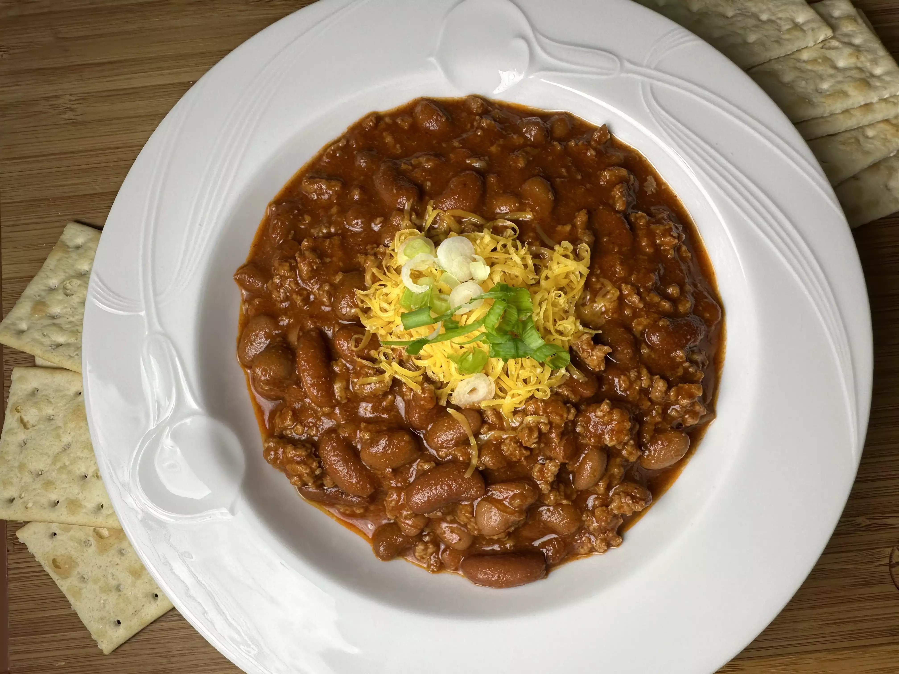

Chili

Description
An easy 5-ingredient chili recipe. It is fast, simple, and delicious.
Ingredients
- 1 pound lean ground beef
- 15 ounces tomato sauce
- 1 (15 ounce) can kidney beans, drained
- 1 (15 ounce) can chili beans, not drained
- 2 tablespoons chili powder, or to taste
- Salt and freshly ground black pepper to taste
Steps
- Heat a large skillet over medium-high heat. Cook and stir ground beef in the hot skillet until browned and crumbly, 5 to 7 minutes.
- Stir in kidney beans, chili beans, and tomato sauce. Bring to a boil and stir in chili powder. Reduce heat to a simmer, and cook, stirring occasionally, until thickened, about 15 minutes. Season to taste with salt and pepper.